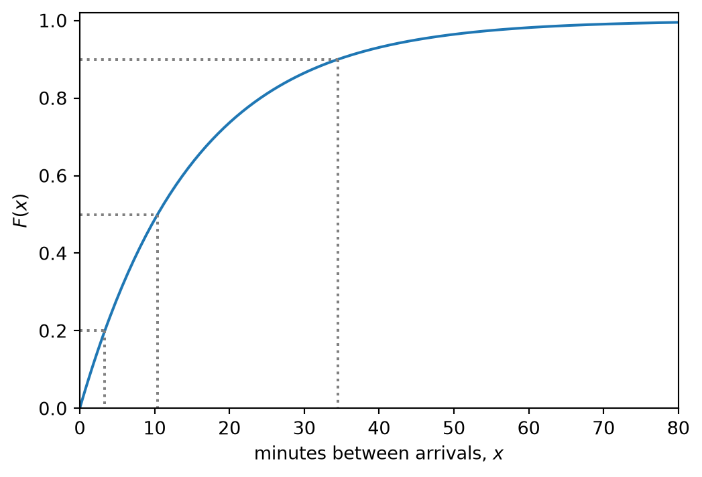
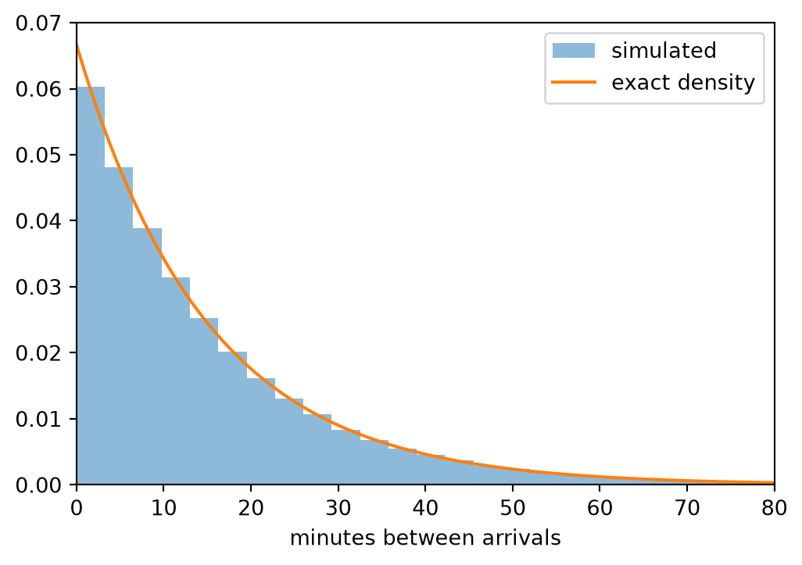
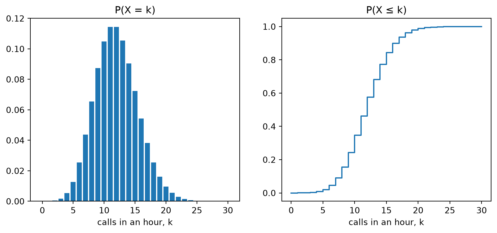
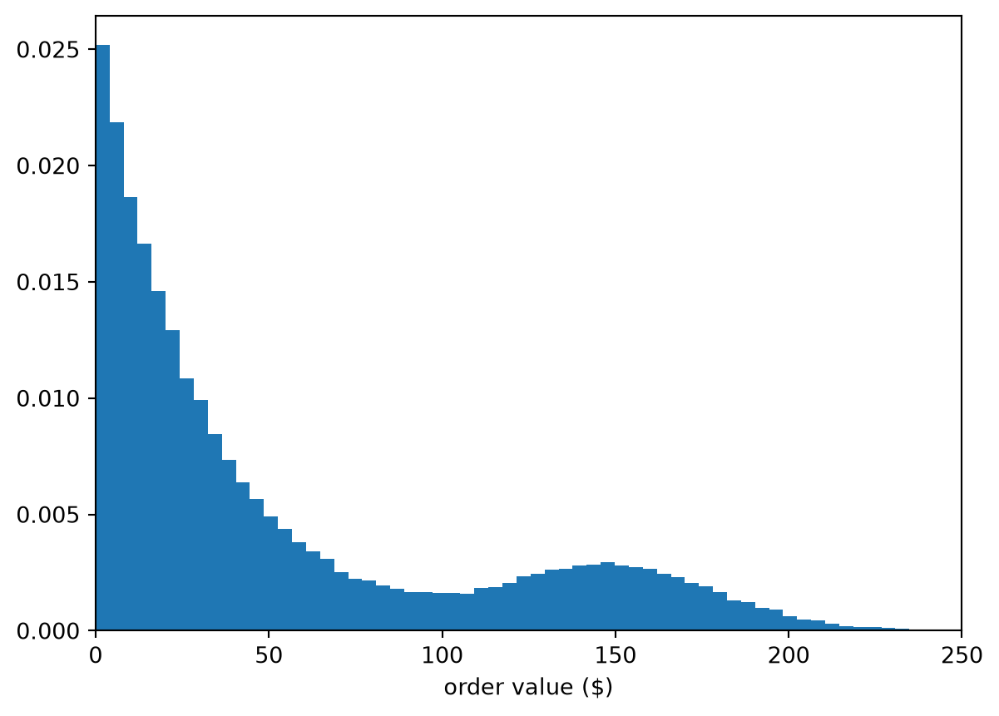
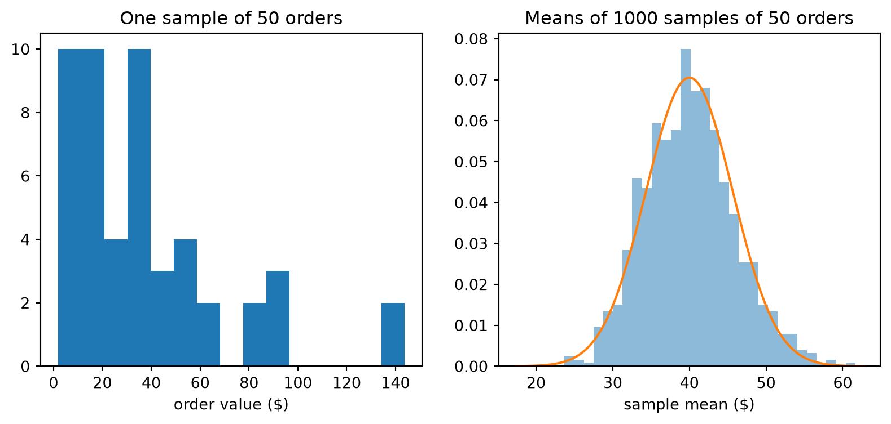

Simulating Random Variables
Goals
- Understand how uniform random numbers can be turned into draws from other distributions, including through the inverse method.
- Use
scipy.statsto represent a distribution as an object, sample from it, and evaluate its probabilities, quantiles, and moments. - Translate business questions into statements about random variables, and answer them by calculation or by simulation.
- Describe the sampling distribution of a statistic and produce one by simulation.
Packages
Simulating distributions
In the previous note we built a linear congruential generator, which produces numbers spread evenly over \([0, 1)\). That is the only kind of number a PRNG produces directly. Draws from every other distribution, such as the normal or the binomial, can be computed from uniform numbers.
Throughout this section, \(U\) denotes a uniform random number on \([0, 1)\).
Binary outcomes
For a uniform number, the probability of landing below \(p\) is \(p\) itself:
\[ P(U < p) = p. \]
So the comparison U < p is True with probability \(p\). Suppose customers who visit a store buy something with probability 0.3:
[0.86 0.39 1. 0.32 0.89 0.11 0.85 0.86 0.63 0.87]
[False False False False False True False False False False]Each entry is one customer. This is a draw from the Bernoulli distribution.
A binomial count is a sum of independent binary outcomes. Here are 5 days with 20 customers each:
array([4, 6, 6, 6, 9])This matches output from rng.binomial(n=20, p=0.3, size=5). A check with many days:
(np.float64(5.99358), np.float64(6.00095))Both are close to the theoretical mean, \(np = 20 \times 0.3 = 6\).
Outcomes with several categories
Suppose orders are small, medium, or large with probabilities 0.5, 0.3, and 0.2. Cut the interval \([0, 1)\) into three pieces with those lengths:
\[ \underbrace{[0,\ 0.5)}_{\text{small}} \qquad \underbrace{[0.5,\ 0.8)}_{\text{medium}} \qquad \underbrace{[0.8,\ 1)}_{\text{large}} \]
A uniform number lands in each piece with probability equal to its length. The cut points are the cumulative probabilities, and np.searchsorted() reports which piece each uniform number falls in:
[0.5 0.8 1. ]
[0.41 0.15 0.69 0.68 0.05 0.88 0.71 0.69]
['small' 'small' 'medium' 'medium' 'small' 'large' 'medium' 'medium']This is what rng.choice(sizes, p=[0.5, 0.3, 0.2]) does for you.
Continuous outcomes: the inverse method
The same idea works for continuous distributions, using the cumulative distribution function (CDF):
\[ F(x) = P(X \le x). \]
A CDF rises from 0 to 1. Its inverse runs the other way: given a probability \(u\), it returns the value \(x\) with \(F(x) = u\). This inverse is called the quantile function, written \(Q(u)\). For example, \(Q(0.5)\) is the median.
The inverse method turns a uniform number into a draw from \(F\):
- Draw \(U\) uniformly on \([0, 1)\).
- Return \(X = Q(U)\).
Why does this work? Since \(Q(U) \le x\) exactly when \(U \le F(x)\),
\[ P(X \le x) = P\big(U \le F(x)\big) = F(x), \]
which is the CDF we wanted.
Reading the recipe off a graph: pick a height \(u\) on the vertical axis, move across to the CDF, and drop down to the horizontal axis.
waits = stats.expon(scale=15) # waiting times with a mean of 15 minutes
grid = np.linspace(0, 80, 200)
u_demo = np.array([0.2, 0.5, 0.9])
x_demo = waits.ppf(u_demo) # the quantile function
fig, ax = plt.subplots(figsize=(6, 4))
ax.plot(grid, waits.cdf(grid))
for u_i, x_i in zip(u_demo, x_demo):
ax.plot([0, x_i], [u_i, u_i], linestyle=":", color="gray")
ax.plot([x_i, x_i], [u_i, 0], linestyle=":", color="gray")
ax.set_xlabel("minutes between arrivals, $x$")
ax.set_ylabel("$F(x)$")
ax.set_xlim(0, 80)
ax.set_ylim(0, 1.02)
plt.show()
Uniform heights are spread evenly, but the values they map to are not: the CDF is steep near zero, so many draws land there, and flat to the right, so few draws are large.
Example: waiting times
Suppose customers arrive, on average, \(\beta = 15\) minutes apart. A common model for the time between arrivals is the exponential distribution, with CDF
\[ F(x) = 1 - e^{-x/\beta}, \qquad x \ge 0. \]
Solving \(u = 1 - e^{-x/\beta}\) for \(x\) gives the quantile function:
\[ Q(u) = -\beta \, \ln(1 - u). \]
np.float64(14.988929073259579)The histogram of the draws matches the exact density curve:

density=True rescales the histogram so that its total area is 1, which puts it on the same scale as a density curve.
The quantile function does the work
Many distributions, including the normal, have no simple formula for \(Q(u)\). The inverse method still works, as long as we have a program that can evaluate \(Q(u)\). In scipy.stats that program is the .ppf() method, which we used in the figure above. Feeding it uniform numbers produces draws from any distribution it knows:
array([53.23697034, 44.02379358, 48.81852915, 46.5471658 , 39.51861226])Use rng.binomial(), rng.exponential(), .rvs(), and similar methods. The purpose of this section is to demonstrate that random number generation in general relies on uniform random numbers. The inverse method is not the only technique. Others, such as rejection sampling, generate candidate values and discard some of them; NumPy’s normal and exponential samplers use a fast version of this idea called the ziggurat algorithm.
Distributions in Python
There are two packages to be aware about.
| Tool | What it does | Example |
|---|---|---|
| NumPy generator methods | draw samples, quickly | rng.normal(loc=45, scale=8, size=1000) |
scipy.stats distribution objects |
draw samples and compute exact quantities | stats.norm(loc=45, scale=8).cdf(50) |
A distribution as an object
In scipy.stats, you first create an object that represents a distribution with specific parameters. The statement \(D \sim \mathcal{N}(45, 8^{2})\), daily demand that is normal with mean 45 and standard deviation 8, becomes:
You can recover the parameters:
Summaries of the distribution have descriptive method names:
45.0
8.0
64.0
45.0Sampling from an object
.rvs() (random variates) draws samples. Pass your generator through random_state, so that the draws come from the same reproducible stream as the rest of your code:
Probabilities and quantiles
| Method | Question it answers | Example |
|---|---|---|
.cdf(x) |
\(P(X \le x)\) | demand.cdf(50) |
.sf(x) |
\(P(X > x)\), which is 1 - cdf(x) |
demand.sf(50) |
.ppf(q) |
the value \(x\) with \(P(X \le x) = q\) (the quantile function) | demand.ppf(0.95) |
.pdf(x) |
height of the density curve at \(x\) (continuous) | demand.pdf(45) |
.pmf(k) |
\(P(X = k)\) (discrete) | stats.poisson(mu=12).pmf(10) |
.mean(), .std(), .median() |
summaries of the distribution | demand.std() |
.rvs(size, random_state) |
draw samples | demand.rvs(size=7, random_state=rng) |
The same methods exist for every distribution.
Common distributions and their parameters
| Distribution | Typical business use | scipy.stats |
|---|---|---|
| Normal | measurements, errors, aggregated demand | stats.norm(loc=mean, scale=sd) |
| Binomial | number of successes among \(n\) customers | stats.binom(n=n, p=p) |
| Poisson | number of arrivals or events per period | stats.poisson(mu=mean) |
| Exponential | time between arrivals | stats.expon(scale=mean) |
| Uniform | a value equally likely anywhere in \([a, b]\) | stats.uniform(loc=a, scale=b - a) |
The same distribution can be described with different parameters. The exponential distribution is often written with a rate \(\lambda\) (arrivals per minute), but scipy.stats uses the scale, which is the mean, \(1/\lambda\). A rate of 4 arrivals per hour is stats.expon(scale=1/4) in hours, or stats.expon(scale=15) in minutes. Similarly, stats.uniform(loc=a, scale=w) covers \([a, a + w]\), not \([a, w]\). When in doubt, check .mean() after creating the object.
Plotting a distribution
A distribution object can be evaluated on a grid of values and plotted. For a discrete distribution, use .pmf() on whole numbers:
calls = stats.poisson(mu=12)
k = np.arange(0, 31)
fig, axes = plt.subplots(1, 2, figsize=(10, 4))
axes[0].bar(k, calls.pmf(k))
axes[0].set_title("P(X = k)")
axes[0].set_xlabel("calls in an hour, k")
axes[1].step(k, calls.cdf(k), where="post")
axes[1].set_title("P(X ≤ k)")
axes[1].set_xlabel("calls in an hour, k")
plt.show()
Modeling problems with random variables
Many business questions have the same structure:
- Name the uncertain quantity. Demand tomorrow, calls in an hour, the value of an order.
- Choose a distribution and its parameters, usually from past data.
- Translate the question into a probability or statistic.
In some cases you can evaluate the required quantity using a function from scipy.stats. Alternatively, simulation of that quantity provides an alternative way to reason about a problem.
| Question | Random variable | Quantity | Code |
|---|---|---|---|
| How often will we run out of stock? | daily demand \(D\) | \(P(D > \text{stock})\) | .sf(stock) |
| How much should we stock? | daily demand \(D\) | the 95th percentile of \(D\) | .ppf(0.95) |
| How much capacity does the call center need? | calls per hour \(C\) | the 95th percentile of \(C\) | .ppf(0.95) |
| How many clicks will a campaign get? | clicks \(X\) among \(n\) emails | \(P(X \ge 30)\) | .sf(29) |
| How long will a customer wait? | waiting time \(W\) | \(P(W > 30)\) | .sf(30) |
| What is a typical order worth? | order value \(V\) | mean or median of \(V\) | .mean(), .median() |
Example: Inventory
A shop stocks 50 units each morning, and daily demand is normal with mean 45 and standard deviation 8. How often does the shop run out?
\[ P(D > 50). \]
(np.float64(0.26598552904870054), np.float64(0.26802))The shop runs out on roughly a quarter of days. How much should it stock so that it runs out on only 5% of days? That is the value \(s\) with \(P(D \le s) = 0.95\), the 95th percentile:
Under this simple model, stocking 59 units (rounded up) avoids running out of inventory on approximately 5% of days.
Example: Call center capacity
A call center receives a Poisson number of calls per hour, with a mean of 12. Capacity is planned so that all calls can be answered in at least 95% of hours.
This indicates capacity should be planned to handle 18 calls per hour. For a discrete distribution, .ppf(q) returns the smallest whole number \(k\) with \(P(C \le k) \ge q\). Check:
(np.float64(0.9370337032260297), np.float64(0.962583510336608))How often does the center receive more calls than that capacity?
.sf(k) means strictly more than k
For a discrete distribution, \(P(C \ge 19)\) is .sf(18), not .sf(19). Being off by one here is a common mistake.
Example: Modeling different groups
Suppose an online store has two kinds of customers.
- 80% are households, whose order values are exponential with a mean of $30.
- 20% are businesses, whose order values are normal with mean $150 and standard deviation $30.
No single named distribution describes all orders, but we can simulate one in two steps using a mixture.
households = stats.expon(scale=30)
businesses = stats.norm(loc=150, scale=30)
def simulate_orders(rng, n, p_business=0.2):
# Determine type of customer
is_business = rng.random(n) < p_business
# Simulate orders for the two types
household_values = households.rvs(size=n, random_state=rng)
business_values = businesses.rvs(size=n, random_state=rng)
return np.where(is_business, business_values, household_values)
orders = simulate_orders(rng, n=100_000)np.where(condition, a, b) takes each value from a where the condition is True, and from b where it is False. We draw both kinds of value for every order and keep the one that matches the customer, which is simple and fast.

A distribution built this way is called a mixture. Its histogram has two peaks, one for each kind of customer. In principle, the two peaks could be obscured; for example, if the component distributions overlapped in their means.
The mean is pulled up by the business orders, while the median reflects a typical household order. Reporting “the average order is about $54” would overstate what a typical customer spends; half of all orders are below about $30.
What fraction of orders exceed $100? For a mixture, the exact answer is a weighted average of the two kinds of customer:
\[ P(V > 100) = 0.8 \, P(V_{\text{household}} > 100) + 0.2 \, P(V_{\text{business}} > 100). \]
(np.float64(0.21898112422323898), np.float64(0.21802))The simulation agrees with the exact calculation.
The sampling distribution of a statistic
One sample yields a single realization
Simulation allows us to study statistics computed from data. Suppose household order values are exponential with mean \(\mu = 40\) dollars. We survey \(n = 50\) orders and compute the sample mean:
We have one sample and can therefore compute one sample mean. We cannot see how different the answer might have been with a different set of 50 orders, drawn from the same underlying population.
Using simulation
A simulation has no such limit. We can draw a new sample of 50 orders as often as we like:
37.95880530073126
44.241381474070174
40.48305404231785The sample mean is itself a random quantity. Its distribution is called the sampling distribution of the mean. To see it, repeat the simulation many times and collect the results:
array([34.88114203, 41.95788923, 39.01378323, 41.19521074, 39.6426103 ])This is the pattern we use for the rest of the module:
- write a function that simulates one dataset and returns one number,
- call it
n_repstimes, and - summarize the collected numbers with a statistic or a plot.
Approximating the sampling distribution
For a sample of \(n\) independent observations from a population with mean \(\mu\) and standard deviation \(\sigma\):
\[ E[\bar{X}] = \mu, \qquad \text{SE}(\bar{X}) = \frac{\sigma}{\sqrt{n}}. \]
- The first equation says that the sample mean is centered at the population mean.
- The second gives its standard deviation, called the standard error.
- The central limit theorem adds that, for large enough \(n\), the sampling distribution is approximately normal, even when the population is not.
An exponential distribution with mean 40 also has standard deviation 40, so theory predicts a center of 40 and a standard error of \(40 / \sqrt{50} \approx 5.66\).
mu, sigma, n = 40, 40, 50
se = sigma / np.sqrt(n)
fig, axes = plt.subplots(1, 2, figsize=(10, 4))
axes[0].hist(sample, bins=15)
axes[0].set_title("One sample of 50 orders")
axes[0].set_xlabel("order value ($)")
grid = np.linspace(mu - 4 * se, mu + 4 * se, 200)
axes[1].hist(means, bins=30, density=True, alpha=0.5)
axes[1].plot(grid, stats.norm(loc=mu, scale=se).pdf(grid))
axes[1].set_title("Means of 1000 samples of 50 orders")
axes[1].set_xlabel("sample mean ($)")
plt.show()
- Left: individual orders are skewed, and range from near $0 to well over $100.
- Right: sample means are roughly bell-shaped, and concentrated within about $10 of the true mean.
- The curve is the normal distribution with mean \(\mu\) and standard deviation \(\sigma / \sqrt{n}\) that the central limit theorem predicts.
Confidence intervals and p-values are statements about the picture on the right. With real data we never see that picture, because we have only one sample.
How many repetitions?
A simulated probability is an estimate, too. If we estimate a probability by the proportion \(\hat{p}\) among \(R\) repetitions, an approximate 95% interval for the true probability is
\[ \hat{p} \pm 1.96 \sqrt{\frac{\hat{p}\,(1 - \hat{p})}{R}}. \]
For the inventory example, where the exact answer is about 0.266:
R = 100: estimate 0.180, margin 0.075
R = 1,000: estimate 0.267, margin 0.027
R = 10,000: estimate 0.268, margin 0.009
R = 100,000: estimate 0.267, margin 0.003- The margin shrinks like \(1 / \sqrt{R}\): to cut it in half, you need four times as many repetitions.
- With \(R = 1000\), a simulated probability is accurate to within a few percentage points. That is enough for the comparisons in this module, so we use
n_reps = 1000throughout.
Summary
| Task | Code |
|---|---|
Binary outcome with probability p |
rng.random(n) < p |
| Categories with given probabilities | np.searchsorted(np.cumsum(probs), u, side="right"), or rng.choice |
| Create a distribution | stats.norm(loc=..., scale=...), stats.poisson(mu=...), … |
| Sampling | dist.rvs(size=n, random_state=rng) |
| Probabilities | dist.cdf(x), dist.sf(x), dist.pmf(k) |
| Quantiles | dist.ppf(q) |
| Summaries | dist.mean(), dist.std(), dist.median() |
| Choose between two arrays | np.where(condition, a, b) |
| Accuracy of a simulated probability | \(1.96 \sqrt{\hat{p}(1-\hat{p})/R}\) |
Exercises
- A support team receives tickets at a rate of 6 per hour, and the times between tickets are exponential.
- Create the
scipy.statsobject for the time between tickets, in minutes. Check its mean. - What is the probability that more than 20 minutes pass without a ticket?
- Check your answer to (b) by simulation, using 1000 draws and the margin formula from this note.
- Create the
- A marketing email has a 4% click rate and is sent to 500 people.
- Which distribution describes the number of clicks? Create the object.
- What is the probability of at least 30 clicks? Be careful with
.sf(). - What number of clicks is exceeded only 1% of the time?
- In the two-kinds-of-customers example, suppose a promotion raises the share of business customers to 30%.
- Use
simulate_orders()withp_business=0.3to estimate the mean and median order value. - Compute the exact fraction of orders above $100 and compare it with your simulation.
- Use
- Using
simulate_mean():- Produce 1000 sample means with \(n = 25\), and another 1000 with \(n = 100\).
- Compute the standard deviation of each set of means. By what factor did it change? Does this agree with \(\sigma / \sqrt{n}\)?
- (Challenge) Change
simulate_mean()so that it returns the sample median instead of the mean. Plot the sampling distribution of the median for \(n = 50\). Is it centered at 40? Usestats.expon(scale=40).median()to explain what you see.